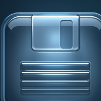
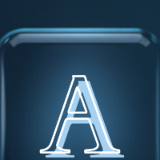
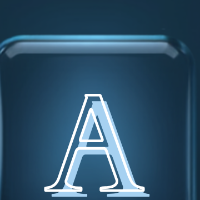
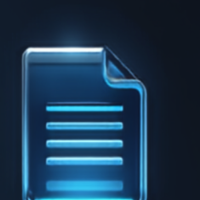
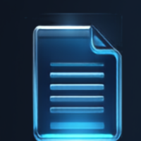
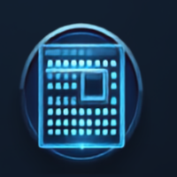

זהו עמוד A4 לבן ונקי, שומר על WYSIWYG מלא עם שוליים 2.5 ס"מ, מרחף מעל הרקע הכהה עם גלי-האנרגיה.
הריבון העליון וסרגל-הצד בנויים בסגנון זכוכית פרימיום — שקיפות, טשטוש-רקע (blur), והארת-קצה עדינה.